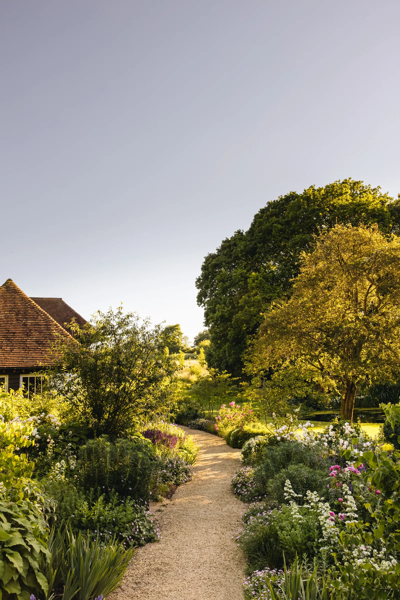

Jogging and running
ที่โรงเรียนตอนมัธยมผมมักมีกิจกรรมวิ่ง และแถวบ้านผมมีสวนสาธารณะอยู่ ทำให้ผมชอบไปวิ่งและเดินแถวๆนั้น
Gaming
ผมชอบเล่นเกมมากๆไม่สามารถขาดได้ ผมชอบเล่นแนว rpg และ soullike ส่วนเกมที่ผมชอบที่สุดคือ monster hunter
Gardening
ที่บ้านผมมีสวนเล็กๆที่แม่พ่อปลูกไว้อยู่แล้วชอบใช้ให้ผมรดน้ำต้นไม้ดูแลสวน จึงทำให้ผมชอบเรื่องต้นไม้พืชไปด้วย

Jogging and running
ที่โรงเรียนตอนมัธยมผมมักมีกิจกรรมวิ่ง และแถวบ้านผมมีสวนสาธารณะอยู่ ทำให้ผมชอบไปวิ่งและเดินแถวๆนั้น